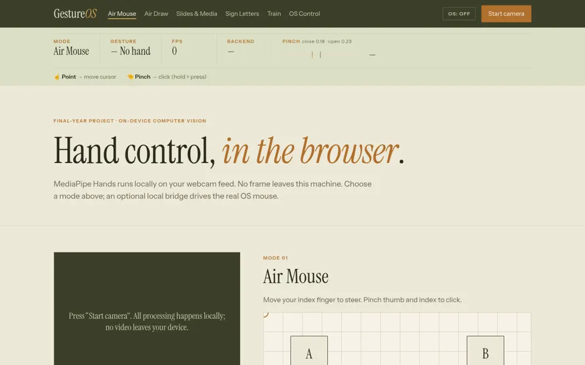

← Back to all workTech project · Final-year project
GestureOS
Hand-gesture control in the browser with MediaPipe Hands, plus an optional local bridge for the real mouse and keyboard.

Air Mouse mode, before the camera starts.- Hand tracking runs on-device in the browser; no video leaves the machine.
- Six modes: Air Mouse, Air Draw, Slides & Media, Sign Letters (ASL subset), a k-NN gesture trainer and OS Control.
- Optional Python websocket bridge (pynput or pyautogui) moves the real cursor, clicks, drags, scrolls and presses keys.
- Starts paused, with a kill switch (Esc or a held fist) and a watchdog that releases input after 1.5 s without a ping.
- One Euro cursor smoothing; installable PWA that works offline.